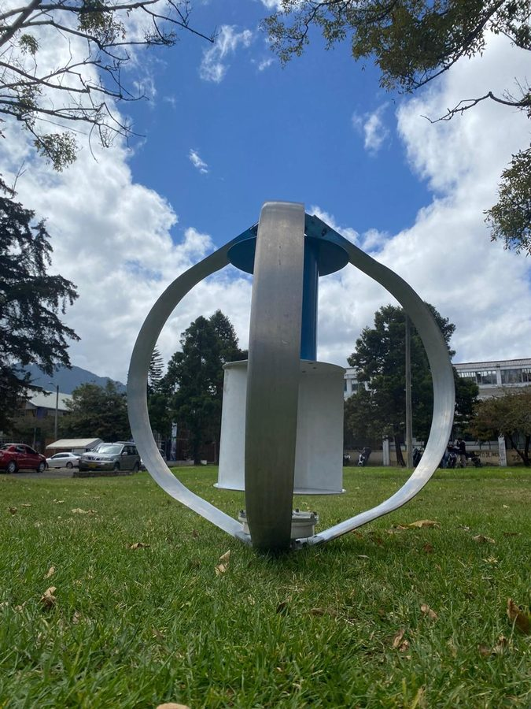
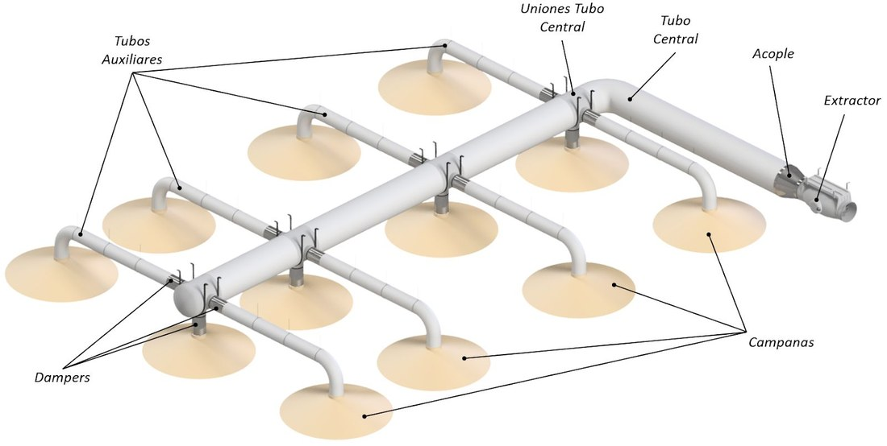
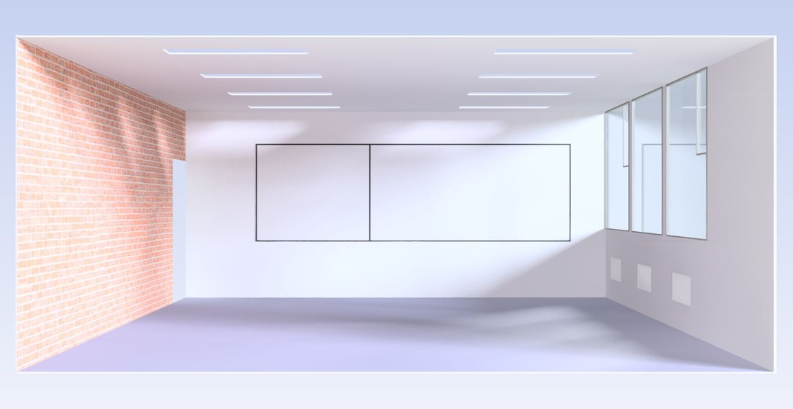
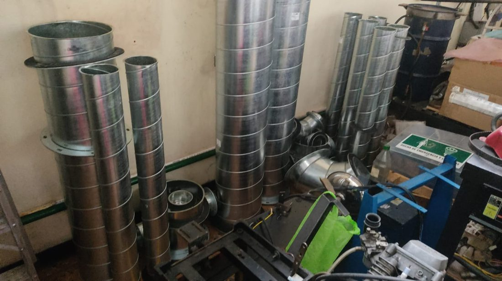
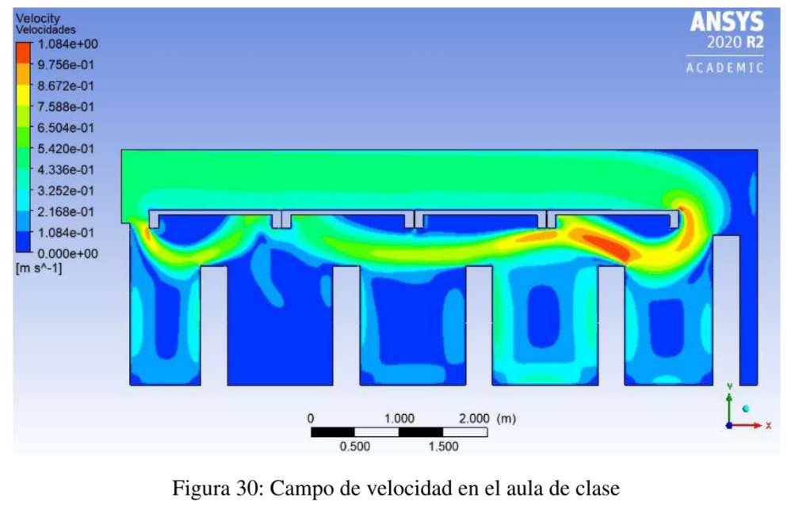
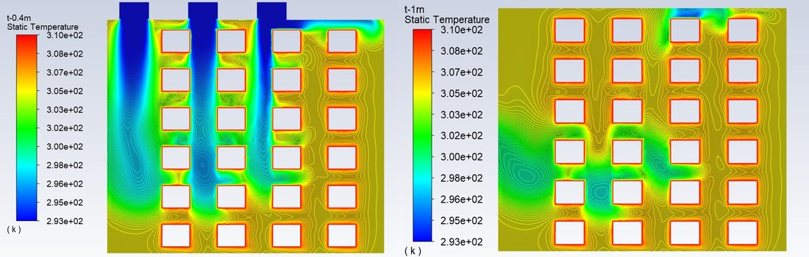
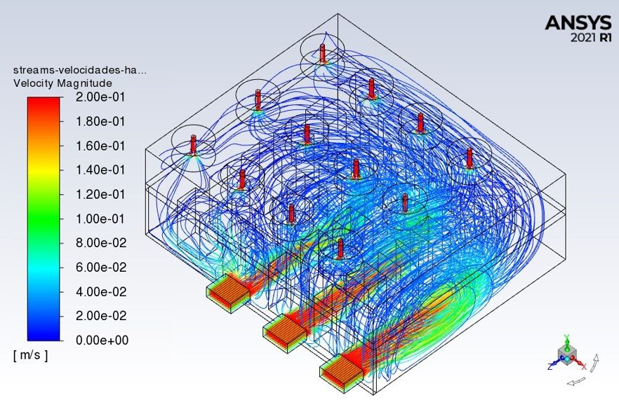
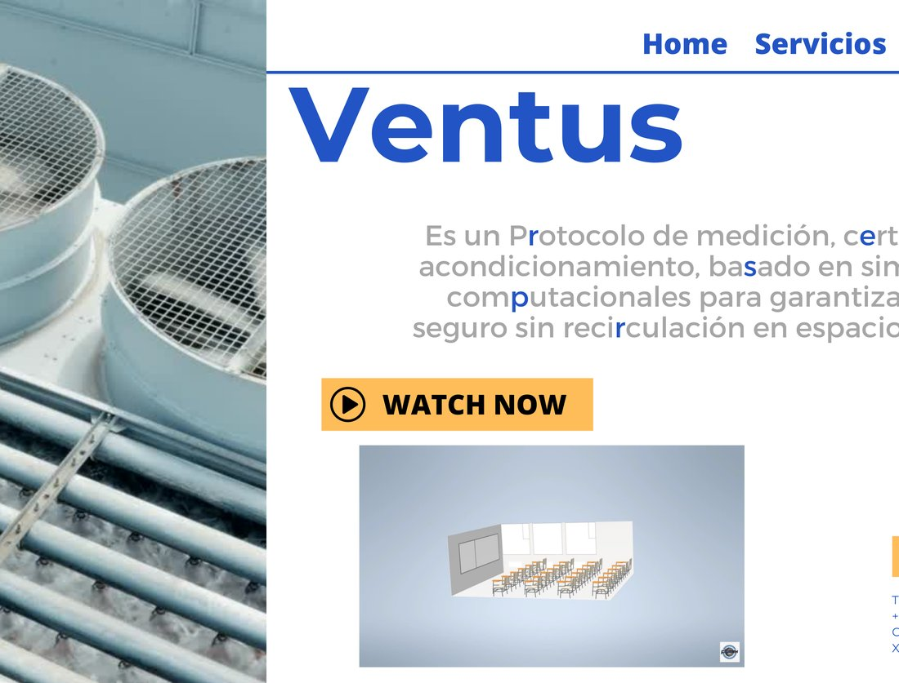
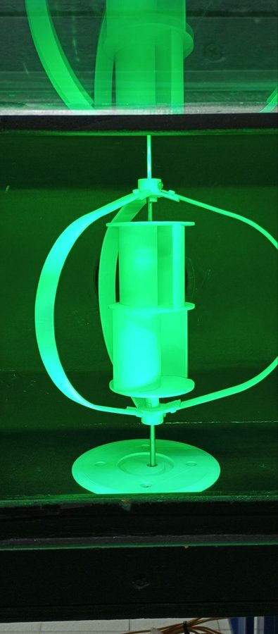
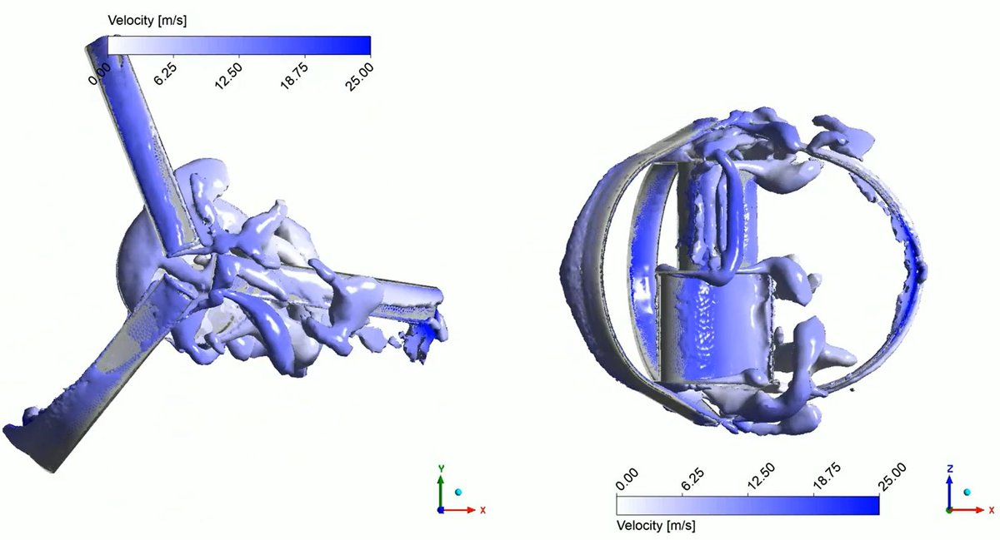

Mecánica de fluidos,
del modelo al túnel de viento.Fluid mechanics,
from the model to the wind tunnel.
FLUMEX es el primer semillero de mecánica de fluidos de la Universidad Nacional de Colombia, sede Bogotá. Aplicamos la aerodinámica y la hidrodinámica a la ingeniería mediante modelos matemáticos, experimentación y simulación computacional.
FLUMEX is the first fluid mechanics student research group (semillero) at the Universidad Nacional de Colombia, Bogotá campus. We apply aerodynamics and hydrodynamics to engineering through mathematical models, experiments and computational simulation.

Un semillero nacido de una pregunta simple.A research group born from a simple question.
Cuando FLUMEX se propuso en 2020, ningún semillero estudiantil de la UNAL sede Bogotá se dedicaba a la mecánica de fluidos. El grupo nace para llenar ese vacío: llevar la aerodinámica, la hidrodinámica y las ciencias térmicas del aula al laboratorio.
When FLUMEX was proposed in 2020, no student research group at UNAL Bogotá worked on fluid mechanics. The group was created to fill that gap and take aerodynamics, hydrodynamics and thermal sciences from the classroom to the lab.
Generar conocimiento en las ramas de aerodinámica e hidráulica de la mecánica de fluidos, y desarrollar innovaciones en esa rama de la ingeniería a nivel Colombia.
To generate knowledge in the aerodynamics and hydraulics branches of fluid mechanics, and to develop innovations in this field of engineering in Colombia.
Estudiar los fenómenos de la mecánica de fluidos —especialmente aerodinámica e hidráulica— por medio de modelos y prácticas experimentales, con el apoyo de simulaciones computacionales.
To study fluid mechanics phenomena, especially in aerodynamics and hydraulics, through models and experimental work supported by computational simulation.
Que FLUMEX se posicione en Bogotá como uno de los semilleros importantes en mecánica de fluidos, habiendo publicado artículos científicos de divulgación en el área y hecho uso del capital humano y las instalaciones de la Universidad Nacional de Colombia, sede Bogotá.
For FLUMEX to become one of the leading student research groups in fluid mechanics in Bogotá, having published science outreach articles in the field and made use of the people and facilities of the Universidad Nacional de Colombia, Bogotá campus.
El enfoque del semillero es fundamental para dar soluciones tangibles a problemas de generación y distribución de energía, análisis hidrodinámico y aerodinámico de maquinaria, y desarrollo de prototipos experimentales. En una región con proyección de crecimiento en generación hidroeléctrica, y en línea con el ODS 9 de la ONU ("industria, innovación e infraestructura") y el ODS 7 ("energía asequible, segura, sostenible y moderna"), el trabajo de FLUMEX es pertinente para el desarrollo tecnológico del país.
The group's focus is essential to provide tangible solutions to problems in energy generation and distribution, hydrodynamic and aerodynamic analysis of machinery, and the development of experimental prototypes. In a region where hydroelectric generation is expected to grow, and in line with UN SDG 9 ("industry, innovation and infrastructure") and SDG 7 ("affordable, reliable, sustainable and modern energy"), FLUMEX's work is relevant to the country's technological development.
Qué nos proponemos.What we set out to do.
Analizar, estudiar y aplicar los conceptos y fenómenos de la mecánica de fluidos y sus ramas —especialmente hidrodinámica y aerodinámica— mediante la implementación de modelos matemáticos y prácticas experimentales soportadas en el análisis de simulaciones computacionales.
To analyze, study and apply the concepts and phenomena of fluid mechanics and its branches, especially hydrodynamics and aerodynamics, by implementing mathematical models and experimental work supported by the analysis of computational simulations.
Estudiar aerodinámica, hidrodinámica, transferencia de calor y termodinámica, generando innovaciones en dichos campos.Study aerodynamics, hydrodynamics, heat transfer and thermodynamics, and develop innovations in these fields.
Implementar modelos matemáticos de fenómenos de fluidos que apoyen los proyectos del semillero.Implement mathematical models of fluid phenomena that support the group's projects.
Realizar prácticas experimentales como complemento a los modelos teóricos.Carry out experimental work to complement the theoretical models.
Desarrollar prototipos que permitan validar los modelos teóricos de las investigaciones.Build prototypes to validate the theoretical models behind our research.
Organizar eventos de difusión de resultados y temas de interés del semillero.Organize events to share results and topics of interest to the group.
Publicar al menos dos veces al año: artículos científicos, ponencias en congresos o informes.Publish at least twice a year: scientific articles, conference papers or reports.
Las preguntas que guían la investigación.The questions that guide our research.
Ocho frentes de trabajo.Eight lines of work.
Para el trabajo de simulación, el semillero combina software comercial (Ansys) con herramientas de código abierto (OpenFOAM), según las necesidades de cada proyecto.
For simulation work, the group combines commercial software (Ansys) with open-source tools (OpenFOAM), depending on what each project needs.
De la ventilación anti-Covid a la energía eólica.From anti-COVID ventilation to wind energy.
Tres convocatorias, tres generaciones de integrantes, una misma línea: llevar un problema real al modelo, al prototipo y a la validación experimental.
Three funding calls and three generations of members have followed the same path: take a real problem to a model, then to a prototype, then to experimental validation.
Sistema de ventilación y control para la disminución de riesgo de contagio de Covid-19Ventilation and control system to reduce the risk of COVID-19 infection
Convocatoria de Innovación "Soluciones con ingenio para el cambio" — Facultad de Ingeniería, 2020Innovation call "Soluciones con ingenio para el cambio", Faculty of Engineering, 2020Sistema de ventilación, control y simulación para disminuir la transmisión de enfermedades por aerosoles en espacios cerradosVentilation, control and simulation system to reduce airborne disease transmission in enclosed spaces
Convocatoria UN Ingnova "Soluciones con ingenio para el cambio", proyecto código 53772 — Convocatoria de Proyectos para el Fortalecimiento de la Innovación en la UNAL: Prototipos y Experiencias Piloto 2019–2021 (segunda cohorte)UN Ingnova call "Soluciones con ingenio para el cambio", project code 53772. Call for Projects to Strengthen Innovation at UNAL: Prototypes and Pilot Experiences 2019–2021 (second cohort)Un sistema de ductos, extracción y sensores de CO₂ que reduce el riesgo de contagio por aerosoles en salones cerrados sin recircular el aire, validado con simulación CFD y probado en el salón 115 del edificio 453.
A system of ducts, air extraction and CO₂ sensors that lowers the risk of airborne infection in closed classrooms without recirculating air. It was validated with CFD simulation and tested in room 115 of building 453.






Profesor asesor: Aldo Germán Benavides Morán. Team, Progress Report II, 2022-1: Carlos Mario Morales Ramírez, Cristian Alejandro Castrillón Ayala, Jorge Andrés León Valbuena, Juan Pablo Ariza Hernández, Julián Santiago Serrano Rincón, Nicolás David Ávila-Rey, Sara Valentina García Martínez and Sofía Holguín Briceño.
Faculty advisor: Aldo Germán Benavides Morán.

Ventus
Bajo el programa UN Ingnova, el equipo desarrolló Ventus: un protocolo de medición, certificación y acondicionamiento de aire basado en las mismas simulaciones computacionales del proyecto, pensado para escalar la solución a aulas, oficinas y locales comerciales. La imagen muestra la primera iteración del sitio del proyecto, diseñada durante la fase de validación de modelo de negocio.
Under the UN Ingnova program, the team developed Ventus, a protocol to measure, certify and condition indoor air. It uses the same computational simulations as the project and was meant to take the solution to classrooms, offices and shops. The image shows the first version of the project's website, designed during the business model validation phase.
Caracterización y puesta a punto de una turbina eólica Savonius-Darrieus para generación de energía renovable en el campusCharacterization and tuning of a Savonius-Darrieus wind turbine for renewable power generation on campus
Convocatoria de Proyectos de Investigación de la Facultad de Ingeniería, 2025Faculty of Engineering research projects call, 2025Trabajo experimental: ensayos en túnel de viento, escaneo de geometrías, impresión 3D y simulación en Ansys.
Experimental work: wind tunnel tests, geometry scanning, 3D printing and simulation in Ansys.


Laboratorios y herramientas.Labs and tools.
FLUMEX tiene registro activo en dos laboratorios de la Facultad de Ingeniería, además del instrumental de diseño y cómputo que usa en sus proyectos.
FLUMEX is registered in two labs of the Faculty of Engineering and also uses design and computing equipment in its projects.
- Ensayos Hidráulicos (LEH)Hydraulic Testing Lab (LEH)
- Túnel de viento de circuito cerrado. Caracterización del perfil de velocidad y pruebas con modelos.Closed-circuit wind tunnel. Velocity profile characterization and model testing.
- Transferencia de CalorHeat Transfer Lab
- Prácticas y ensayos de ciencias térmicas, en apoyo a los proyectos de generación y transformación de energía del semillero.Thermal science practice and testing for the group's energy generation and conversion projects.
- Diseño de Máquinas y PrototiposMachine Design and Prototyping Lab
- Túnel de viento de circuito abierto. Pruebas con modelos a escala y visualización de flujo.Open-circuit wind tunnel. Scale model testing and flow visualization.
- Metrología Dimensional de PrecisiónPrecision Dimensional Metrology Lab
- Escaneo de geometrías para la elaboración de modelos a escala.Geometry scanning to build scale models.
- Herramientas de cómputo y manufacturaComputing and manufacturing tools
- Impresora 3D (modelado por deposición fundida) y workstation con licencia Ansys Research (desde 2020).3D printer (fused deposition modeling) and a workstation with an Ansys Research license (since 2020).
Reuniones, roles y convocatorias.Meetings, roles and calls.
Dos reuniones semanales: una interna entre integrantes y otra en conjunto con el profesor director, para revisar avances y coordinar tareas.
Two meetings a week: one among members and one with the faculty director, to review progress and coordinate tasks.
Convocatorias durante el primer mes y medio de cada semestre, con un periodo de prueba para los nuevos integrantes.
Calls for new members run during the first month and a half of each semester, with a trial period for newcomers.
LíderLeader
Unifica los puntos de vista del equipo, media las diferencias de opinión y mantiene el entusiasmo sobre las tareas.
Brings the team's views together, mediates disagreements and keeps people motivated about the work.
ModeradorModerator
Coordina cada reunión, otorga la palabra y dirige la discusión de forma organizada. El rol rota entre integrantes.
Runs each meeting, gives the floor and keeps the discussion organized. The role rotates among members.
SecretarioSecretary
Redacta el acta de cada reunión y lleva el registro de asistencia del grupo.
Writes the minutes of each meeting and keeps the group's attendance record.
Quién hace parte del semillero.Who is part of the group.
Aldo Germán Benavides Moran
Profesor director · Depto. de Ingeniería Mecánica y MecatrónicaFaculty director · Dept. of Mechanical and Mechatronics Engineering agbenavidesm@unal.edu.coIsabella Gutiérrez Ávila
Estudiante de pregradoUndergraduate student Trabajo experimental en el laboratorio de hidráulica y el túnel de viento.Experimental work in the hydraulics lab and the wind tunnel.Juan David Pardo Aragón
Estudiante de pregradoUndergraduate student Trabajo experimental en túnel de viento. Desarrollo y prueba de sensores y componentes electrónicos.Experimental work in the wind tunnel. Development and testing of sensors and electronic components.Juan José Jaramillo Casanova
Estudiante de pregradoUndergraduate student Manufactura de modelos a escala.Manufacturing of scale models.Juan Manuel Gómez Galvis
Estudiante de pregradoUndergraduate student Trabajo experimental en laboratorio. Desarrollo de planos y modelos a escala.Experimental lab work. Technical drawings and scale models.Juan Sebastián Niño Perico
Estudiante de pregradoUndergraduate student Modelado computacional en CFD.Computational modeling in CFD.Manuel Alejandro Maya León
Estudiante de pregradoUndergraduate student Trabajo experimental en el túnel de viento del laboratorio de hidráulica. Elaboración de modelos a escala.Experimental work in the hydraulics lab wind tunnel. Building scale models.Omar Santiago Zuleta Romero
Estudiante de pregradoUndergraduate student Modelos computacionales de la fluido-dinámica de turbomaquinaria. Apoyo en tareas experimentales.Computational models of turbomachinery fluid dynamics. Support with experimental tasks.Santiago Alejandro Ramírez Cepeda
Estudiante de pregradoUndergraduate student Montajes en el laboratorio de hidráulica. Caracterización de turbomaquinaria.Test setups in the hydraulics lab. Turbomachinery characterization.Sofía Vera Acosta
Estudiante de pregradoUndergraduate student Diseño y fabricación de piezas. Trabajo experimental en túnel de viento. Elaboración de informes técnicos.Part design and manufacturing. Experimental work in the wind tunnel. Technical reports.Andrés Felipe Delgadillo Lozano
Integrante nuevoNew member Apoyo en varios proyectos del semillero mientras se organizan los frentes de trabajo. Interesado en aportar en tareas de CFD y aerodinámica.Supports several of the group's projects while the work areas are being organized. Interested in contributing to CFD and aerodynamics work.Juan Carlos Quiroga Candela
Integrante nuevoNew member Apoyo en varios proyectos del semillero mientras se organizan los frentes de trabajo.Supports several of the group's projects while the work areas are being organized.José Esteban Mendieta Merchán
Integrante nuevoNew member Apoyo en varios proyectos del semillero mientras se organizan los frentes de trabajo.Supports several of the group's projects while the work areas are being organized.Laura Sofía Ruiz Constante
Integrante nuevoNew member Apoyo en varios proyectos del semillero mientras se organizan los frentes de trabajo.Supports several of the group's projects while the work areas are being organized.Tito Samuel Méndez Orjuela
Integrante nuevoNew member Apoyo en varios proyectos del semillero mientras se organizan los frentes de trabajo.Supports several of the group's projects while the work areas are being organized.Estudiantes que han dejado huella.Students who left their mark.
Andrés Camilo Ricaurte Abadía
Estudiante de pregradoUndergraduate student Apoyo en ensayos de túnel de viento y simulaciones computacionales de dinámica de fluidos.Support with wind tunnel tests and computational fluid dynamics simulations.Carlos Iván Kryksman Valbuena
Estudiante de pregradoUndergraduate student Modelado computacional. Búsqueda de convocatorias.Computational modeling. Searching for funding calls.Carlos Mario Morales Ramírez
Estudiante de posgradoGraduate student Apoyo logístico del semillero. Modelado computacional en CFD.Logistics support for the group. Computational modeling in CFD.Eduin Andrés Mejía Rodríguez
Estudiante de pregradoUndergraduate student Manufactura de modelos a escala. Instrumentación para pruebas de laboratorio.Manufacturing of scale models. Instrumentation for lab tests.También hicieron parte del semillero como equipo del proyecto de ventilación anti-COVID:
Also part of the group, as the team behind the anti-COVID ventilation project:
No trabajamos solos.We don't work alone.
GNUM — Grupo de modelado y métodos numéricos en ingenieríaGNUM, Modeling and Numerical Methods in Engineering group
FLUMEX está vinculado a GNUM y comparte con el grupo el trabajo en métodos numéricos aplicados a la solución de ecuaciones diferenciales para el modelado de materiales y procesos. El director de FLUMEX, Aldo Germán Benavides Moran, también hace parte de GNUM.
FLUMEX is linked to GNUM and shares its work on numerical methods for solving differential equations to model materials and processes. FLUMEX's director, Aldo Germán Benavides Moran, is also a member of GNUM.
GRIEQUI y OCEÁNICOS — Sede MedellínGRIEQUI and OCEÁNICOS, Medellín campus
Colaboración orientada a formar a los integrantes en tecnologías para el aprovechamiento de la energía oceánica, fortaleciendo el modelado de fluidos y el desarrollo de tecnologías innovadoras entre sedes.
A collaboration to train members in ocean energy technologies and to strengthen fluid modeling and technology development across campuses.
PAI+ — Universidad Autónoma de OccidentePAI+, Universidad Autónoma de Occidente
Colaboración con el grupo PAI+ de la Universidad Autónoma de Occidente, en Cali.
Collaboration with the PAI+ group at Universidad Autónoma de Occidente, in Cali.
Departamento de Ingeniería Mecánica — Universidad de los AndesDepartment of Mechanical Engineering, Universidad de los Andes
Colaboración con el Departamento de Ingeniería Mecánica de la Universidad de los Andes.
Collaboration with the Department of Mechanical Engineering at Universidad de los Andes.
Próximos pasos.Next steps.
Terminar la caracterización de la turbina Savonius-Darrieus y explorar su integración como fuente de energía renovable en el campus.Finish characterizing the Savonius-Darrieus turbine and study how to integrate it as a renewable energy source on campus.
Fortalecer la línea de energía oceánica junto con los grupos GRIEQUI y OCEÁNICOS de la sede Medellín.Strengthen the ocean energy line with the GRIEQUI and OCEÁNICOS groups at the Medellín campus.
Mantener al menos un artículo de divulgación científica publicado por año y una presentación en congreso nacional o internacional.Publish at least one science outreach article a year and give one talk at a national or international conference.
Abrir nuevas convocatorias semestrales para vincular estudiantes a los proyectos en curso y a los que vienen.Open a call every semester so students can join current and upcoming projects.
Cómo vincularte a FLUMEX.How to join FLUMEX.
FLUMEX abre convocatoria para nuevos integrantes cada semestre. Así funciona el proceso.
FLUMEX opens a call for new members every semester. This is how the process works.
- Postúlate en la convocatoria semestralApply in the semester callSe abre durante el primer mes y medio de cada semestre.It opens during the first month and a half of each semester.
- Periodo de pruebaTrial periodLos nuevos integrantes se integran a las reuniones y proyectos en curso.New members join the ongoing meetings and projects.
- Asiste a las reuniones semanalesAttend the weekly meetingsJueves y viernes, con espacio para presentar avances, proponer proyectos y compartir conocimiento.Thursdays and Fridays, with time to present progress, propose projects and share what you know.
- Toma un rolTake on a roleLos roles de moderador y secretario rotan entre los integrantes del grupo.The moderator and secretary roles rotate among group members.